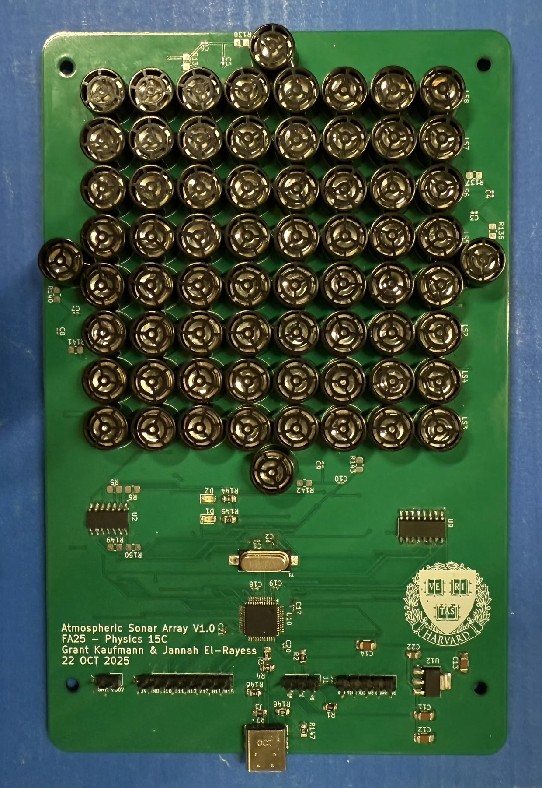

Research / Project archive
Transducer phased array.
A phased-array project exploring coordinated transducer operation.

Project brief
Full build documentation is on the way.
Project notes
The photographs below document the board and its assembly. A detailed account of the circuit design, testing, and results is being prepared.
From the build.
3 photosSelect any photo to open the full-size gallery.